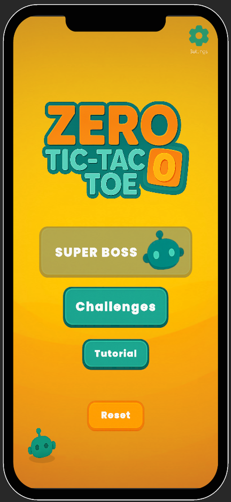
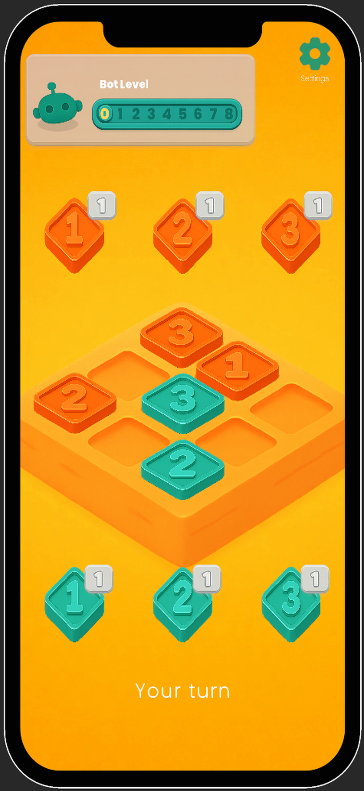
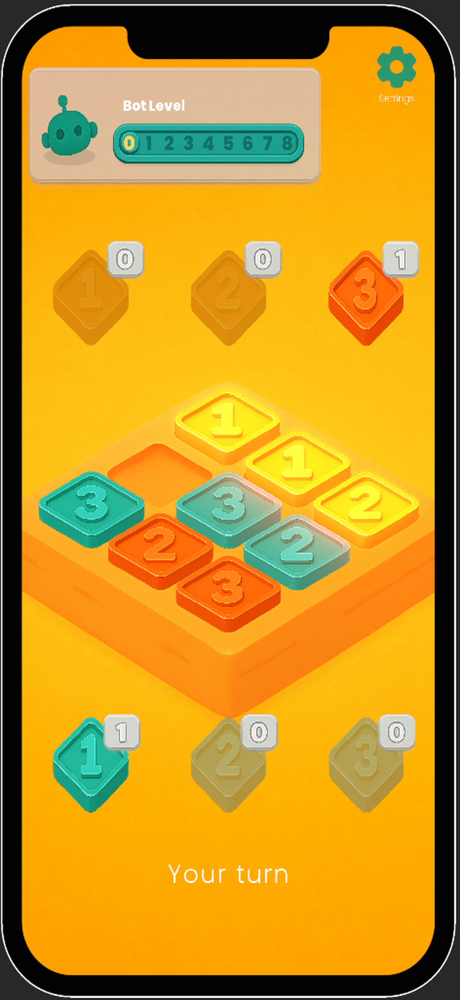
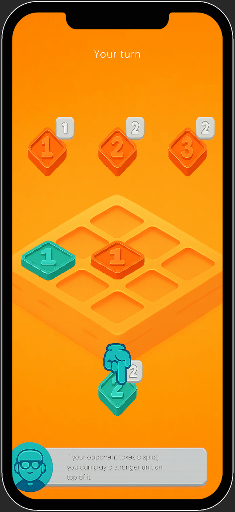

GENERAL INFORMATION
Zero Tic-Tac-Toe is a deceptively simple yet deeply strategic twist on the classic game. At first glance, it’s played on a familiar 3×3 grid: two players alternate placing markers, aiming to line up three in a row. But beneath that simplicity lies a layer of tactical depth—each “piece” you place carries a strength value, and stronger units can stack atop and conquer weaker ones. Suddenly, every move becomes a question of whether to block your opponent, capture territory, or bait them into a trap.
What makes Zero Tic-Tac-Toe truly special is the AI behind it. Leveraging core ideas from DeepMind’s AlphaGo Zero, I designed a self-learning neural network that taught itself to play from scratch. Without any human data or handcrafted heuristics, the model—trained end-to-end on my personal Mac mini—learned to anticipate and counter every strategy with near-perfect play. The result is an opponent that’s both approachable at lower difficulty settings (ideal for casual matches or beginners) and unforgivingly sharp at higher levels, making each game feel fresh.
Building this project was an opportunity to blend reinforcement learning, Monte Carlo Tree Search, and game-design principles into one cohesive package. I wrote the entire training pipeline using Python and TensorFlow. Every match features an optional interactive tutorial, so newcomers can quickly grasp the stacking rule and basic strategies.
- Apple Store: Apple Store link
- Google Play Store: Google Play Store link
Demo video: Zero Tic Tac Toe video




MY CONTRIBUTION
Game theory: Design MCTS in cooperation with DRL to search for optimal strategies.
Game design: Gameplay and game mechanic design; game balancing.
AI programming: Technically design for AI system; character system architecture; gameplay programming.
Game monetization: Game analytics using Unity Game Services; game monetization planning
WHAT I TOOK AWAY
MCTS & Reinforcement Learning
Implementing a self-play pipeline from scratch deepened my understanding of Monte Carlo Tree Search, value/policy network architectures, and the iterative training loop that drives an AlphaGo Zero–style agent. Building these components clarified how model predictions translate into search decisions and vice versa.
Work in a Scrum team
Crafting multiple difficulty levels—ranging from a “friendly learner” to a near-optimal adversary—taught me how to manipulate exploration/exploitation parameters (e.g., temperature in the policy output) and adjust search rollouts to create an approachable experience for beginners while still offering a genuine challenge for experienced players. Playtesting was essential in calibrating these settings so the AI felt neither too trivial nor impossibly forbidding.
Resource-Constrained Training
Training a neural network on a personal Mac mini forced me to optimize data pipelines, manage GPU/CPU workloads effectively, and balance training speed against model complexity. I learned how to structure minibatch generation, checkpointing, and hyperparameter tuning so that the AI could still converge without requiring a massive cluster.
© BinhLai, 2021